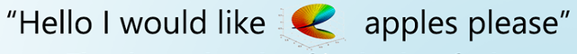

“STOP DOING MATH” appears to first be published by the creator welcometomymemepage onto Instagram on April 17, 2020. From there it has widely circulated showing up in reddit posts, discord messages, etc. Beyond that, it has created its own genre of “STOP DOING X” posts such as “STOP DOING OFFICES” which use the same format to satirize different subjects. Due to the decentralized distribution of the image, it is hard to tell exactly how widespread it has become, but knowing the original post has 18 thousand likes on Instagram and anecdotally all of my friends–as a college student at the University of Washington–are familiar with the meme, it is safe to assume it has become very widespread.
There are several tells as to the audience of this poster. While welcometomymemepage’s instagram is a public page intended for general consumption, the material skews towards a more educated audience–students and people having gone through higher education as many of the memes make references to niche subjects like tiktaalik and often have pseudo-scientific format: references most students will be able to appreciate but the general public may not. It is likely that much of their audience is students in physics/engineering/other subjects which heavily rely on the upper levels of math which can get very confusing without a strong theoretical understanding of it, culminating in the creation of this post: a satire of how confusing upper-level mathematics is.
While the stated argument of the post is that we should “stop doing math,” it has a less satirical underlying argument that modern math is incomprehensible and impractical.
The bullet points ironically appeal to logos (albeit circuitously) for why math is incomprehensible. In the fourth, concepts from math are taken out of their mathematical context and put in an ordinary conversation–“Please give me INFINITY of it”–to show how they don’t make sense, and so arguing by contradiction, they imply a conclusion of “math doesn’t make sense.” Now this argument isn’t made directly since most people likely don’t think the concept of zero or infinity is “deranged” and are somewhat familiar with them; However, the author immediately follows these points by images of incredibly confusing graphs/visualizations that the reader likely won’t have any understanding of. Having been primed, the author sets the reader up to wonder what context those images could be used in–what could the figures ever represent? The number of apples? Clearly not. How could these figures ever be used in the context of something practical? Through satire, the author causes the reader to think about how ridiculous math can be without having to unironically say it straight up as a reader would likely reject a direct statement like “math is ridiculous and useless.”
For what it’s worth, the author doesn’t directly lie (excluding obvious satire)–the figures they show are “REAL Math”: in order they represent a graph of the norm of the gamma function, a graph of f(z) = |atan(z^{-5})| representing the xy plane with complex numbers, a cube 5-compound, and the Riemann surface for sqrt(5). However, the implication that these mathematical concepts are incomprehensible and useless is false. The cube-5 compound is just five cubes interposed upon each other to create a new interesting shape. The gamma function is just the natural extension of factorials (eg. 5!=5*4*3*2*1) to all complex numbers from the integers according to the rule of n!=(n-1)! (and that it is logarithmically convex) which turns out to be incredibly useful for statistics, solving differential equations, and other uses. They aren't easy concepts to understand, but they certainly aren't incomprehensible or useless.
The post relies very little on ethos and uses pathos sparingly–the only emotion it really evokes is amusement. What it does rely on is logos, as mentioned before, interweaved with the common propaganda techniques of name-calling, card-stacking, and plain-folk.
The name calling is obvious–calling mathematicians “utterly Deranged” and saying we’re fools for believing them–and though the name calling may be satirical, it doesn’t lessen its impact. Then, it stacks the deck using colorful attention-grabbing mathematical figures chosen to be intentionally confusing. Even mathematicians need context and explanations to understand such figures–a common person stands little chance understanding such figures on their own. Further, the bright red “?????”s below the images directly tells the audience “don’t think about it; they don’t make sense” even though if one were to think hard enough about them, they may be able to make sense of them (the third one in particular being a cube-5 compound is quite literally just 5 cubes interposed on top of each other–not exactly difficult to understand with that context). Finally, it creates a divide between the ‘plain-folk,’ or ‘ordinary people,’ and mathematicians, claiming that what mathematicians do has no value to the plain folk, is meaningless, and moreover the mathematicians are making fools of us plain-folk. Through anti-intellectualism it makes being an average person aspirational and “real” while the mathematicians are deranged and lost in fantasy. The last quote:  hammers this point in; the bright colors draw attention to the absurdity of using such a graph to ask for a number of apples, the statement being stand in for using math for something useful. It makes it appear as if mathematicians are insane–unlike us normal people who will just say something like “5 apples.”
Finally, there is a subtle element of kairos underlying the image; published in 2020 with the Covid-19 pandemic in full swing and the Trump administration disseminating misinformation about it, public belief in experts was at an all time low. If there was a time to be questioning experts and claiming some sort of grand conspiracy of experts fooling the common folk, this was it.
While this post is satire it nonetheless effectively conveys its point that math is incomprehensible and impractical. It is unlikely this was the intent of the author–their intent for this post was likely just to get a laugh from the audience–but it speaks to a deeper sentiment in the author and many students that mathematics doesn’t make sense, and mathematicians are off in their own world working on crazy things with no application whatsoever. Its usage of satire, logos and propagandic techniques are effective in underhandedly growing that sentiment and though the implications the author makes may be false, under the guise of satire and having not directly said falsehoods, it protects itself from scrutiny. It is absolutely a piece of propaganda telling you to stop doing math.